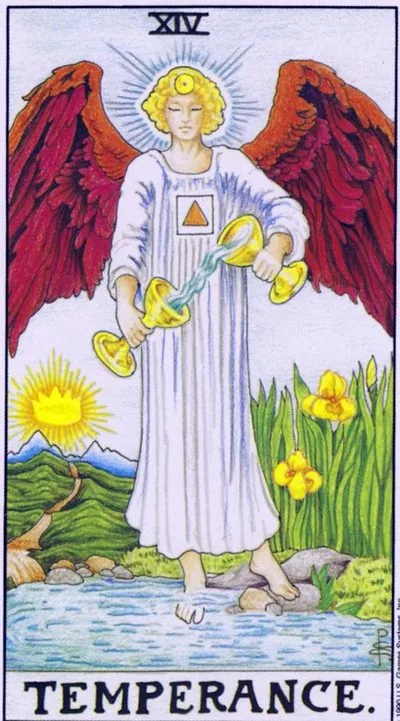

Major Arcana · XIV
XIVTemperance
An angel pours water from a bowl into a bowl without a drop past: the art of mixing the inmixable with measure and patience.
Archetype and core meaning
Temperance is an alchemist among the arcana: one foot on a stone, the other in water, and the flow between the bowls is just as much as it should be. The card states that opposites do not have to fight, fire and water, if the proportions are right, give the cure.
In the scenario, it promises a period of smooth flow: conflicts subside not because someone won, but because a formula for coexistence has been found, the results come slowly, but without cracks: everything built at that time is long.
The Sagittarius nature of the arsan guides him to a higher goal: Moderation is not the boredom of the ascetic, but the precision of the archer saving power to hit. Its law is simple: less, but better, and every day a little bit.
Daily life
A quiet day without turmoil, and it's a gift: a steady rhythm, normal activities, no sudden turns. It's good to clean up your diet and regime, gently negotiate with a difficult person. Everything you start requires dosage: little by little, but every day - that's how repairs and health are done.
Work and career
The processes align: controversial projects get a balanced plan, divisional conflicts converge on compromise; the best time for negotiations, where you need not pressure, but neat assembly of positions, and for learning a new craft. Avoid extremes — no rushes, no downtime: steady pace is now more profitable than jerks.
Relationships
Relationships enter a safe haven: after storms, you want silence and warm little things. The card teaches you to connect things — his friends and yours, the city and the country, silence and conversation — into a common way without winners. A couple in crisis can recover through care without demands.
Health
One of the great recovery cards is that the body adjusts its own balance when you stop disturbing, shows diet, regimen, water, swimming, walking, a good period for rehabilitation and for going beyond extremes, both therapeutic fasting and stomach holidays, and alcohol and stimulants are especially undesirable now.
Spiritual meaning
In the Tarot Thoth, this arcana is called Art, which is also called the alchemical stage of dissolution and connection. The meditation on water transfusion trains subtlety: how much strength to take and when to stop. The card patronizes healing, charging water, mixing traditions. Fourteen is the double five: freedom, pacified by measure.
The proportions are broken: something in life is overflowing, and something has long dried up.
Archetype and core meaning
Inverted Moderation is an alchemist who drops flasks. One cup is spilled: work eats life, passion eats your head, caring for others your own resources, instead of synthesis, you get a swing from extreme to extreme.
Often, the card indicates impatience: the person wants the result immediately and drains the main thing with the water, or vice versa, stuck in a warm swamp of comfort, avoiding any tension until the skills rust.
There is a bright line: sometimes a coup means a cleansing crisis — the body and mind themselves have begun to draw the poison, a process that is unpleasant, but leads to a new equilibrium, if not disturbed by panic.
Daily life
The everyday signal of excess: food, TV shows, spending, cleaning at night — all excessive. Choose one habit and cut it by a third instead of total prohibitions. Haste breaks things: do not cook soup faster by stirring every half minute. Return to the day at least one real pause.
Work and career
At work, there's a swing: abruptly after abruptly, or lull to a stupor, agreements collapse because of inconsistency. Teams pull in different directions, resources are crooked, timelines are against opportunities. Don't sign up for projects without clear credentials, it's easy to get caught between two fires with someone else's tasks in hand.
Relationships
The emotional roller coaster: the merger without a trace, the ice distance. Someone in a pair requires too much at once — attention, guarantees, change — and this burns out the feeling. There is a novel on the contrast of attraction and quarrels, which is held by adrenaline, not intimacy. The cure is one, boring and effective: measure.
Health
The biases are obvious: overeating or dieting hard, coffee against insomnia and pills for the consequences, sports jerks after months of lying down. The body rebels against extremes with exacerbations. Recovery starts small — sleep by the clock, water, daily step — without exploits and prohibitions at once.
Spiritual meaning
In practice, an inverted card warns of a broken measure: an overdose of energy, a mix of incompatible traditions, work at exhaustion. Healing techniques require reassembly — less force, more accuracy. Sometimes it is a sign of a cleansing crisis: pus came out before the wound closed.
🌿 In brief
The main idea
Moderation is the right dosage and the right moment. Too little medicine doesn't work, too much becomes poison, and so does almost any quality.
How it manifests
The ability to feel the pace of the situation, change the form without losing the essence, gradually move from one state to another.
Work and money
Transition from one form to another: a change of profession, a new way of earning, transferring money from one instrument to another.
In a relationship
The understanding that two people can live in different rhythms.
The shadow side
The measure becomes irrelevant: the person waits too long where it is necessary to act, or is too calm in a situation that requires a sharp solution.
Feature of the school
One of the great metaphors of the card is the water that flows between two bowls. The shape changes, the content remains.
📜 In detail — lecture extracts
Essence of the card
Moderation is a measure and a correct dosage: the angel “spills water from the bowl into the bowl — measures the right and correct amount of any action.” The word Temperance comes from the Latin tempo — time: it is “the sense of time”, movement “at the right pace.” The metaphor of the dose is repeated throughout the lecture: “too little snake poison will not give any effect, too much will kill, and a moderate, carefully measured dose is the medicine.” His formula: moderation is not slow, it is with the right speed; “moderation — the ability to feel the time in time and make the supreme sense of the spiritual salvation, the .
Upright position
- By element/spheres of alignment:
- - Society and desires (fire row) - breadth of views: a person slowly, step by step changes his opinion about the world; who does not change his beliefs, he is stagnant. Lack of snobbery: two bowls - two people, "one and the same idea in the transition from one person to another can take a completely different form", water takes the form of a bowl.
- - Rejection of outdated traditions and formalism: the main thing is the idea, the form is secondary; "the tradition of walking with a horse for water while running water looks ridiculous." I understood the essence of the card ("fluid of meaning") - you don't need to learn the meaning: "You can always taste the situation."
- - Work: change and development of the situation - the transition from one state to another, including the change of professional form while preserving the essence (example of the artist: painted for someone else's name → sells art on his own behalf, understanding it better than others).
- - Finances and property (Pentacles): a new way of earning; investing means that ‘money changes its form’—bank funds ↔ real estate ↔ shares ↔ a business—and the shift from circulating funds to reserves and back must be timed well; measured decisions about other people's money (the eighth house: inheritance, loans, and debts).
- Action (air): information handling and impact on people; exposure instead of waiting by the sea for the weather: the right word is loud and on time; information leaking must be accurate; calmness = even breathing: first thought, then did.
- Personal life: good goals, attention to trivialities, new traditions. In the communication of two people, the understanding that the other has a "slightly different rhythm of life"; change to think calmly and systematically. Understanding the essence of relationships is "focus on water": love can have different forms, it is important that it is the same emotions for both. His standard example: met five years, do not rush to move together — "we are essentially married for a long time," the form (stamp) does not matter.
- The image of moderation is through everyday life (alcohol, sugar, meat: useful in excess becomes harmful).
Negative meaning
Exact formula: “It’s the same thing, only working to the detriment of the situation.” The disadvantages here are not “violations on the contrary”, but the inappropriateness of the measure: A person acts with restraint and leisurely where it is necessary to sharply and quickly “When catching fleas, exposure and calmness do not carry any meaning.” “Moderation is not always appropriate Where it is inappropriate, the card gives a negative value. Working in the negative - moving into a situation you don't like (but it's still a development), or moving too slowly In a relationship, the negative connotation gives a disappointing answer for clients about “both husband and not husband”: The partner is in two states at the same time. “In the world of husbands and lovers,” but “if he’s happy with that, that’s the essence of your relationship.”
School emphases and distinctive points
- - Astrology of his system: VIII house with transition to IX - "the transition from Scorpio to Sagittarius, from water to fire"; the exit from interest in material life to spiritual. There is a pair of opposite houses Scorpio-Taurus (one coin on both sides): pleasant / useful and measure in everything.
- Tetramorph and cardinal virtues: the ancient series of "moderation, wisdom, courage, justice" is divided into a fixed cross - Taurus (justice), Leo (courage), Scorpio (moderation), Aquarius / angel (wisdom); four evangelists, four elements. Wings like a dragonfly - half in water (matter), metamorphosis, life in the air (spirit): a creature on the border of two worlds.
- Mythology: He doesn't name an angel -- behind the image is the goddess Irida: the rainbow as a harbinger of joyful news; the ladder of the gods; the "female version of Hermes": Hermes carries information, Irises brings emotion and joy. Irises grow on the border of water and earth -- hence the yellow irises on the card; Zeus sent her to draw water from the Styx - a foot in one world; the water of another world for the world of the living. Persian trail: Ahura Mazda pours water from the bowl to the bowl, the Christian jumps to the end of the tooth of joy.
- - Ancient Greek layer: dilution of wine with water ("Temporis... it pours, not pours") - to get drunk correctly, gradually; Aristotle - the middle between coldness and promiscuity; Plato - control of behavior according to the concepts of good and evil; Eleusinian mysteries and ergot - substance as a key to the transition between worlds at the correct dosage.
- The middle path of the Buddha: the extremes of the palace and the seven-year austerity are bad both; Waite: the symbol "measuring, combining and harmonizing the spiritual and material nature of man."
- - Film and culture: "Noah" Aronofsky (immoderate wine after the flood), "Blooberry" Yakunin (struggle with his inner devil), "Fountain" Aronofsky (three lives, tree of life, star Xibalba), "Cloud Atlas" (souls pass from body to body, a slow transformation of personality), Alice in Wonderland (a piece of mushroom: more or less - the same content in another form changes), "Golden antelope" ("Stup, gold can not be too much; "Pastor" the doctor - a few words of the TV-doctor, "Pastorious" is not a little bit dead man").
- The saying of the whole lecture (Polish): co za dużo, to niezdrowo - "What is too much is already harmful."
Keywords
- Measure, correct dosage (“how much to hang in grams”), sense of time, correct speed/temp, middle path, smooth transition between worlds, two bowls – two people, adjustment, patience without delay, synthesis of the spiritual and material.
- ---